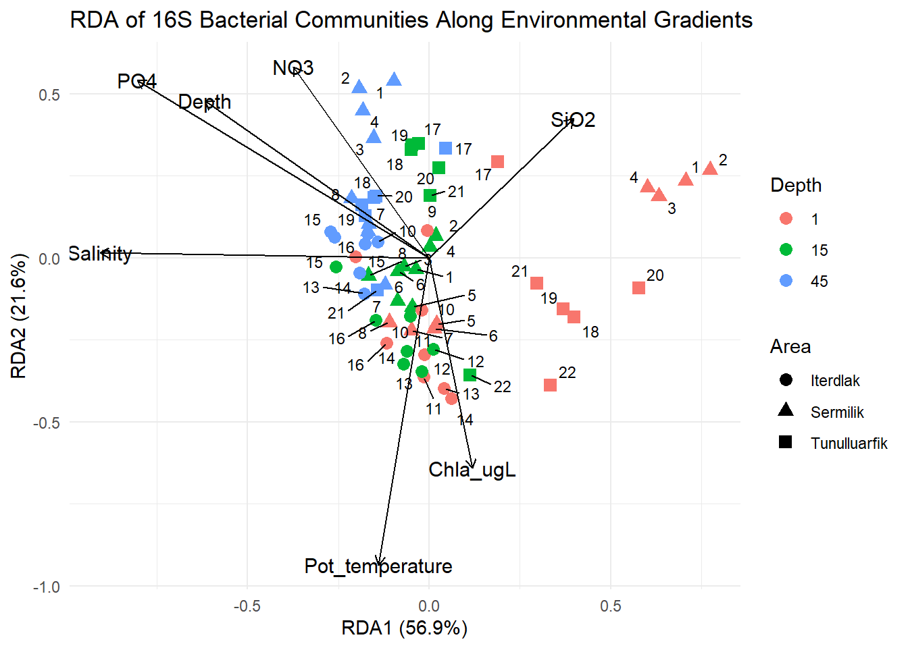
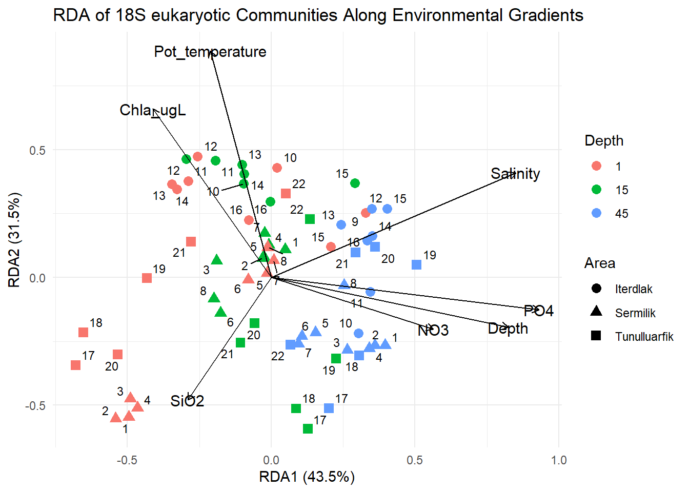
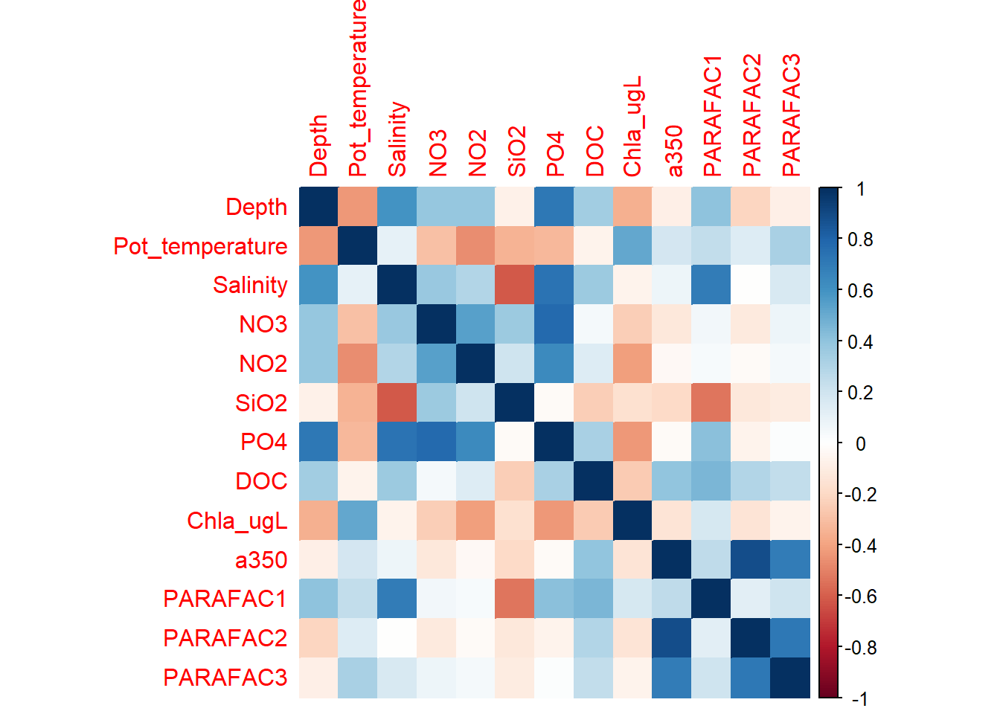
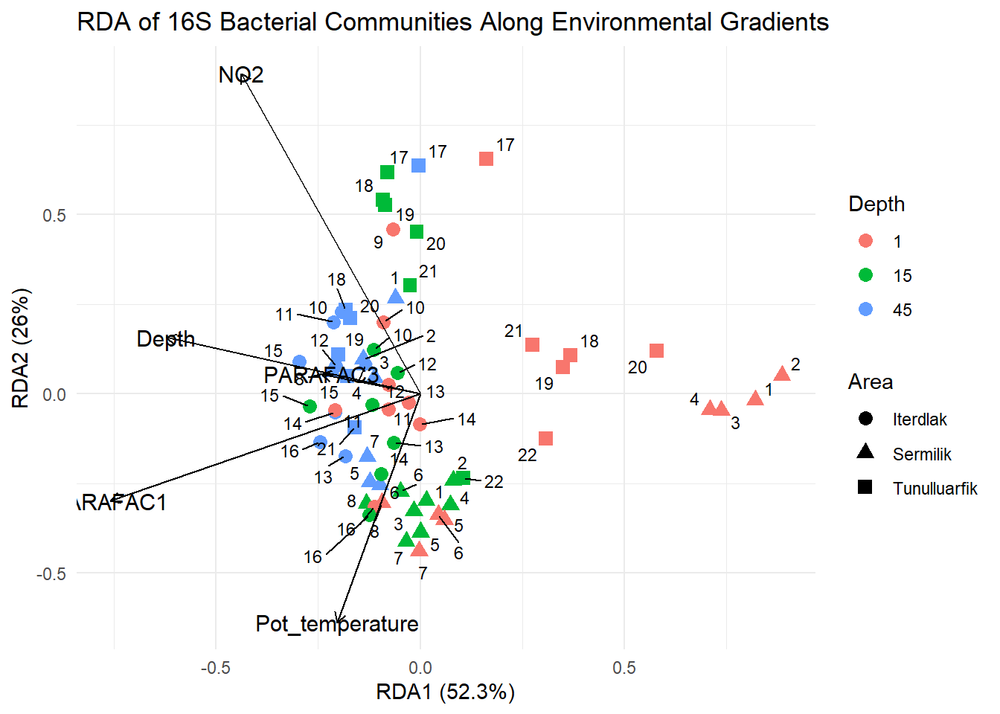

library(tidyverse)
library(knitr)
library(kableExtra)
# ctd <- read_csv("data/CTD_data_Greenland_fjords.csv")
#
# target_depths <- c(1, 15, 45)
#
# ctd_selected <- ctd %>%
# tidyr::crossing(target_depth = target_depths) %>% # make 3 copies per row
# group_by(station_idx, station_lab, target_depth) %>% # <-- key fix
# slice_min(order_by = abs(pressure - target_depth), n = 1, with_ties = FALSE) %>%
# ungroup()
#
# ctd_selected %>% head(10)
metadata <- read_csv("data/Metadata_Augmentum.csv")
ps_16s <- readRDS("data/ps_16s.rds")
ps_18s <- readRDS("data/ps_18s.rds")Combined 16S, 18S and metadata
Combining datasets
library(phyloseq)
library(vegan)
# Collapse taxonomic rank
ps16_genus <- tax_glom(ps_16s, taxrank = "Genus")
ps18_genus <- tax_glom(ps_18s, taxrank = "Genus")
# Filter out rare taxa
prev_filter <- function(ps, threshold = 0.2){
otu <- as(otu_table(ps), "matrix")
if(!taxa_are_rows(ps)){
otu <- t(otu)
}
prevalence <- rowSums(otu > 0) / ncol(otu)
keep <- prevalence >= threshold
prune_taxa(keep, ps)
}
ps16_filt <- prev_filter(ps16_genus, threshold = 0.2)
ps18_filt <- prev_filter(ps18_genus, threshold = 0.2)
taxa_names(ps16_filt) <- paste0("Bac_", taxa_names(ps16_filt))
taxa_names(ps18_filt) <- paste0("Euk_", taxa_names(ps18_filt))
# Combine matrices
mat16 <- as(otu_table(ps16_filt), "matrix")
mat18 <- as(otu_table(ps18_filt), "matrix")
combined_matrix <- cbind(mat16, mat18)
taxa_names_combined <- colnames(combined_matrix)
# Create a matching column in metadata
metadata <- metadata %>%
mutate(
ps_id = sprintf("%02d_St%d_D%d", row_number(), StationID, Depth)
)
sd_16s <- sample_data(ps_16s) %>%
data.frame() %>%
rownames_to_column("ps_id")
sd_16s_aug <- sd_16s %>%
left_join(
metadata %>% select(01:24,52) %>%
select(-Cruise, -Date, -Area, -StationID, -Depth, -`Water mass`),
by = "ps_id"
)
# Put rownames back
sd_16s_aug <- sd_16s_aug %>%
column_to_rownames("ps_id")
sample_data(ps_16s) <- sample_data(sd_16s_aug)
sample_data(ps_18s) <- sample_data(sd_16s_aug)
# Transform data using Hellinger transformation (best for PCA/RDA):
otu_16s <- as.data.frame(otu_table(ps16_filt))
otu_18s <- as.data.frame(otu_table(ps18_filt))
otu_16s_hel <- decostand(otu_16s, method = "hellinger")
otu_18s_hel <- decostand(otu_18s, method = "hellinger")
# Prepare environmental matrix
env <- metadata %>%
select(Depth, Salinity, Pot_temperature, NO3, PO4, SiO2, Chla_ugL) %>%
drop_na()
# scale variables
env_scaled <- scale(env)Taxonomy by water masses
library(microbiome)
my_colors <- c("#FF6666", "#8DD3C7", "#377EB8", "#4DAF4A", "#984EA3", "#A6D854", "#FFFF33",
"#FF7F00", "#F781BF", "#999999","#66C2A5", "#FC8D62", "#8DA0CB", "#E78AC3", "#FFD92F",
"#E5C494", "#B3B3B3", "#A65628","#FFFFB3", "#BEBADA", "#FB8072", "#80B1D3", "#FDB462")
# Collapse + compositional
ps_class <- tax_glom(ps_16s, taxrank = "Class")
ps_rel <- transform(ps_class, "compositional")
# Top 10 taxa (OTU/ASV IDs after glomming)
top10 <- top_taxa(ps_rel, n = 10)
# Melt full object
df <- psmelt(ps_rel)
# Make Depth nice (adapt if your Depth column differs)
df <- df %>%
mutate(
Depth = as.character(Depth),
Depth = if_else(Depth %in% c("1","01","surface","Surface"), "surface",
if_else(Depth %in% c("15","15m","15 m"), "15m",
if_else(Depth %in% c("45","45m","45 m"), "45m", Depth))),
Depth = factor(Depth, levels = c("surface", "15m", "45m")),
Fjord = as.factor(Fjord),
Station = factor(Station, levels = as.character(sort(unique(as.numeric(Station))))),
Water_mass = as.factor(Water_mass)
)
# Top10 + Other
df <- df %>%
mutate(
Class = as.character(Class),
Class = if_else(is.na(Class) | Class == "", "Unclassified", Class),
Class_plot = if_else(OTU %in% top10, Class, "Other")
) %>%
group_by(Fjord, Depth, Sample, Number, Station, Class_plot, Water_mass) %>%
summarise(Abundance = sum(Abundance), .groups = "drop")
# Legend order: Other last
df$Class_plot <- factor(
df$Class_plot,
levels = c(setdiff(sort(unique(df$Class_plot)), "Other"), "Other")
)
# Colors: use your palette (first 10) + Other
other_color <- "#C0C0C0"
plot_colors <- c(my_colors[1:10], other_color)
names(plot_colors) <- levels(df$Class_plot)
plot_fjord <- function(df, fjord_name){
dff <- df %>% filter(Fjord == fjord_name)
ggplot(dff, aes(x = Station, y = Abundance, fill = Class_plot)) +
geom_col(width = 0.85) +
facet_wrap(~Depth, nrow = 1) +
scale_fill_manual(values = plot_colors) +
scale_y_continuous(labels = scales::percent) +
labs(
title = paste0(fjord_name, " — Top 10 Classes + Other"),
x = "Station Number",
y = "Relative abundance",
fill = "Class"
) +
theme_classic() +
theme(
legend.position = "bottom",
axis.text.x = element_text(angle = 45, hjust = 1),
strip.background = element_rect(fill = "white"),
strip.text = element_text(face = "bold")
) +
guides(fill = guide_legend(nrow = 2, byrow = TRUE))
}
fjords <- sort(unique(df$Fjord))
plots <- lapply(fjords, function(fj) plot_fjord(df, fj))
names(plots) <- as.character(fjords)RDA
rda_16s <- rda(otu_16s_hel ~ Depth + Salinity + Pot_temperature + NO3 + PO4 + SiO2 + Chla_ugL, data = metadata)
rda_18s <- rda(otu_18s_hel ~ Depth + Salinity + Pot_temperature + NO3 + PO4 + SiO2 + Chla_ugL, data = metadata)
# Test significance
anova(rda_16s, by = "term")Permutation test for rda under reduced model
Terms added sequentially (first to last)
Permutation: free
Number of permutations: 999
Model: rda(formula = otu_16s_hel ~ Depth + Salinity + Pot_temperature + NO3 + PO4 + SiO2 + Chla_ugL, data = metadata)
Df Variance F Pr(>F)
Depth 1 0.028179 20.9111 0.001 ***
Salinity 1 0.030729 22.8034 0.001 ***
Pot_temperature 1 0.014619 10.8486 0.001 ***
NO3 1 0.005356 3.9744 0.009 **
PO4 1 0.011067 8.2125 0.001 ***
SiO2 1 0.009909 7.3529 0.001 ***
Chla_ugL 1 0.002485 1.8443 0.079 .
Residual 56 0.075464
---
Signif. codes: 0 '***' 0.001 '**' 0.01 '*' 0.05 '.' 0.1 ' ' 1anova(rda_18s, by = "term")Permutation test for rda under reduced model
Terms added sequentially (first to last)
Permutation: free
Number of permutations: 999
Model: rda(formula = otu_18s_hel ~ Depth + Salinity + Pot_temperature + NO3 + PO4 + SiO2 + Chla_ugL, data = metadata)
Df Variance F Pr(>F)
Depth 1 0.036858 10.2574 0.001 ***
Salinity 1 0.027909 7.7668 0.001 ***
Pot_temperature 1 0.018915 5.2638 0.001 ***
NO3 1 0.007408 2.0615 0.029 *
PO4 1 0.010990 3.0585 0.001 ***
SiO2 1 0.006959 1.9367 0.038 *
Chla_ugL 1 0.005893 1.6400 0.088 .
Residual 56 0.201227
---
Signif. codes: 0 '***' 0.001 '**' 0.01 '*' 0.05 '.' 0.1 ' ' 1# Extract scores
scores_16s <- scores(rda_16s, display = "sites") %>% as.data.frame()
scores_16s <- cbind(scores_16s, metadata)
env_arrows <- scores(rda_16s, display = "bp") %>% as.data.frame()
eig <- rda_16s$CCA$eig
pct <- round(100 * eig / sum(eig), 1)
x_lab <- paste0("RDA1 (", pct[1], "%)")
y_lab <- paste0("RDA2 (", pct[2], "%)")
scores_16s$Depth <- as.factor(scores_16s$Depth)
ggplot(scores_16s, aes(RDA1, RDA2)) +
geom_point(aes(color = Depth, shape = Area), size = 3) +
ggrepel::geom_text_repel(aes(label = StationID), size = 3) +
geom_segment(
data = env_arrows,
inherit.aes = FALSE,
aes(x = 0, y = 0, xend = RDA1, yend = RDA2),
arrow = arrow(length = unit(0.2, "cm")),
color = "black"
) +
geom_text(
data = env_arrows,
inherit.aes = FALSE,
aes(x = RDA1, y = RDA2, label = rownames(env_arrows)),
size = 4
) +
theme_minimal() + ggtitle("RDA of 16S Bacterial Communities Along Environmental Gradients") +
labs(
x = x_lab,
y = y_lab
)
# Extract scores
scores_18s <- scores(rda_18s, display = "sites") %>% as.data.frame()
scores_18s <- cbind(scores_18s, metadata)
env_arrows <- scores(rda_18s, display = "bp") %>% as.data.frame()
eig <- rda_18s$CCA$eig
pct <- round(100 * eig / sum(eig), 1)
x_lab <- paste0("RDA1 (", pct[1], "%)")
y_lab <- paste0("RDA2 (", pct[2], "%)")
scores_18s$Depth <- as.factor(scores_18s$Depth)
ggplot(scores_18s, aes(RDA1, RDA2)) +
geom_point(aes(color = Depth, shape = Area), size = 3) +
ggrepel::geom_text_repel(aes(label = StationID), size = 3) +
geom_segment(
data = env_arrows,
inherit.aes = FALSE,
aes(x = 0, y = 0, xend = RDA1, yend = RDA2),
arrow = arrow(length = unit(0.2, "cm")),
color = "black"
) +
geom_text(
data = env_arrows,
inherit.aes = FALSE,
aes(x = RDA1, y = RDA2, label = rownames(env_arrows)),
size = 4
) +
theme_minimal() + ggtitle("RDA of 18S eukaryotic Communities Along Environmental Gradients")+
labs(
x = x_lab,
y = y_lab
)
Note: What is collinearity? definition: Two or more environmental variables are strongly correlated with each other.
As part of a collinearity diagnostics, we can investigate the correlations between variables and the Variance Inflation Factor (VIF).
Let’s start with the correlation:
env <- metadata %>%
select(Depth, Pot_temperature, Salinity, NO3,NO2, SiO2, PO4, DOC, Chla_ugL, a350, PARAFAC1, PARAFAC2, PARAFAC3) %>%
drop_na()
library(corrplot)
cor_mat <- cor(env, use = "complete.obs")
corrplot(cor_mat, method = "color")
We can test VIF with vif.cca():
| VIF value | Meaning |
|---|---|
| < 5 | OK |
| 5–10 | Moderate collinearity ⚠️ |
| > 10 | Strong collinearity ❌ |
Calculating the VIF of the variables used:
library(knitr)
vif_values <- vif.cca(rda_16s)
kable(
data.frame(
Variable = names(vif_values),
VIF = as.numeric(vif_values),
row.names = NULL
),
digits = 2,
caption = "Variance Inflation Factors (VIF) for predictor variables"
)| Variable | VIF |
|---|---|
| Depth | 3.70 |
| Salinity | 18.46 |
| Pot_temperature | 2.29 |
| NO3 | 5.89 |
| PO4 | 13.76 |
| SiO2 | 8.28 |
| Chla_ugL | 1.98 |
| Variable | VIF | Interpretation |
|---|---|---|
| Depth | 3.7 | ✅ OK |
| Salinity | 18.5 | ❌ Very high |
| Pot_temperature | 2.3 | ✅ OK |
| NO3 | 5.9 | ⚠️ Borderline |
| PO4 | 13.8 | ❌ High |
| SiO2 | 8.3 | ⚠️ Moderate |
| Chla | 2.0 | ✅ OK |
What to do? We could remove redundant variables
For example: keeping these:
- Depth → physical structure
- Temperature → water mass
- NO3 → nutrients
- Chla → biology
rda_16s_clean <- rda(
otu_16s_hel ~ Depth + Pot_temperature + NO2 + PARAFAC1 + PARAFAC3,
data = metadata, na.action = na.omit
)
anova(rda_16s_clean, by = "term")Permutation test for rda under reduced model
Terms added sequentially (first to last)
Permutation: free
Number of permutations: 999
Model: rda(formula = otu_16s_hel ~ Depth + Pot_temperature + NO2 + PARAFAC1 + PARAFAC3, data = metadata, na.action = na.omit)
Df Variance F Pr(>F)
Depth 1 0.028179 19.1646 0.001 ***
Pot_temperature 1 0.026909 18.3009 0.001 ***
NO2 1 0.026701 18.1593 0.001 ***
PARAFAC1 1 0.006736 4.5808 0.004 **
PARAFAC3 1 0.004001 2.7211 0.030 *
Residual 58 0.085282
---
Signif. codes: 0 '***' 0.001 '**' 0.01 '*' 0.05 '.' 0.1 ' ' 1vif_values <- vif.cca(rda_16s_clean)
kable(
data.frame(
Variable = names(vif_values),
VIF = as.numeric(vif_values),
row.names = NULL
),
digits = 2,
caption = "Variance Inflation Factors (VIF) for predictor variables"
)| Variable | VIF |
|---|---|
| Depth | 1.97 |
| Pot_temperature | 1.81 |
| NO2 | 1.41 |
| PARAFAC1 | 2.01 |
| PARAFAC3 | 1.42 |
# Extract scores
scores_16s <- scores(rda_16s_clean, display = "sites") %>% as.data.frame()
meta_used <- metadata
# %>%
# drop_na(DOC)
scores_16s <- cbind(scores_16s, meta_used)
env_arrows <- scores(rda_16s_clean, display = "bp") %>% as.data.frame()
eig <- rda_16s_clean$CCA$eig
pct <- round(100 * eig / sum(eig), 1)
x_lab <- paste0("RDA1 (", pct[1], "%)")
y_lab <- paste0("RDA2 (", pct[2], "%)")
scores_16s$Depth <- as.factor(scores_16s$Depth)
ggplot(scores_16s, aes(RDA1, RDA2)) +
geom_point(aes(color = Depth, shape = Area), size = 3) +
ggrepel::geom_text_repel(aes(label = StationID), size = 3) +
geom_segment(
data = env_arrows,
inherit.aes = FALSE,
aes(x = 0, y = 0, xend = RDA1, yend = RDA2),
arrow = arrow(length = unit(0.2, "cm")),
color = "black"
) +
geom_text(
data = env_arrows,
inherit.aes = FALSE,
aes(x = RDA1, y = RDA2, label = rownames(env_arrows)),
size = 4
) +
theme_minimal() + ggtitle("RDA of 16S Bacterial Communities Along Environmental Gradients")+
labs(
x = x_lab,
y = y_lab
)
Which taxa covariate with environmental gradients in our RDAs?
- Extract and Plot Loadings from dbRDA
taxa_scores <- scores(rda_16s_clean, display = "species", scaling = 2) %>%
as.data.frame() %>%
rownames_to_column("Genus")
env_arrows <- scores(rda_16s_clean, display = "bp", scaling = 2) %>%
as.data.frame() %>%
rownames_to_column("variable")
taxa_scores <- taxa_scores %>%
mutate(strength = sqrt(RDA1^2 + RDA2^2))
top_taxa <- taxa_scores %>%
arrange(desc(strength)) %>%
slice(1:20)
ggplot() +
# taxa points
geom_point(data = top_taxa, aes(RDA1, RDA2), color = "blue") +
geom_text(data = top_taxa, aes(RDA1, RDA2, label = Genus), size = 3) +
# environmental arrows
geom_segment(data = env_arrows,
aes(x = 0, y = 0, xend = RDA1, yend = RDA2),
arrow = arrow(length = unit(0.25, "cm")),
color = "darkgreen") +
geom_text(data = env_arrows,
aes(x = RDA1, y = RDA2, label = variable),
color = "darkgreen",
fontface = "bold") +
theme_minimal() +
labs(title = "Environmental Drivers of Bacterial Genera (RDA)")
- Correlation Analysis (Taxa vs. Environment)
- Differential Abundance Testing
- Machine Learning (Random Forest)
Looking for associations
# options(repos = c(
# bioc = "https://bioc.r-universe.dev",
# CRAN = "https://cloud.r-project.org"))
# install.packages("SpiecEasi")
library(SpiecEasi)
se <- spiec.easi(
combined_matrix,
method = "mb",
lambda.min.ratio = 1e-2,
nlambda = 20,
sel.criterion = "stars",
pulsar.params = list(rep.num = 50)
)
cat("Number of edges:\n")Number of edges:adj <- getRefit(se)
sum(adj) / 2 # number of edges[1] 725rownames(adj) <- taxa_names_combined
colnames(adj) <- taxa_names_combinedPlotting the Network graph (iGraph)
library(igraph)
graph <- graph_from_adjacency_matrix(
adj,
mode = "undirected",
diag = FALSE
)
# Label nodes by domain
V(graph)$domain <- ifelse(
grepl("^Bac_", V(graph)$name),
"Bacteria",
"Eukaryote"
)
table(V(graph)$domain)
Bacteria Eukaryote
115 123 # Get cross-domain edges
edges <- as_data_frame(graph, what = "edges")
nodes <- tibble(
name = V(graph)$name,
domain = V(graph)$domain
)
edges2 <- edges %>%
left_join(nodes, by = c("from" = "name")) %>%
rename(domain_from = domain) %>%
left_join(nodes, by = c("to" = "name")) %>%
rename(domain_to = domain)
cross_edges <- edges2 %>% filter(domain_from != domain_to)
nrow(edges2) # total edges (should match ~725)[1] 725nrow(cross_edges) # cross-domain edges[1] 278
Note
💬 Note — Cross-domain associations
A total of 278 cross-domain edges were identified out of 725 total inferred associations, representing approximately 38% of all network connections.
This substantial proportion indicates that bacterial and eukaryotic communities are not structured independently. Instead, the network reveals meaningful cross-domain covariance patterns, suggesting coordinated ecological dynamics. These associations may reflect bloom-driven bacterial responses, shared environmental filtering, or potential trophic and metabolic interactions between microbial eukaryotes and prokaryotes.
deg <- degree(graph)
cat("🔹 Overall degre of connectivity:\n")🔹 Overall degre of connectivity:summary(deg) Min. 1st Qu. Median Mean 3rd Qu. Max.
0.000 4.000 6.000 6.092 8.000 19.000 cat("🔹 Bacteria degre of connectivity:\n")🔹 Bacteria degre of connectivity:deg_cross <- degree(graph, v = V(graph)[V(graph)$domain == "Bacteria"])
summary(deg_cross) Min. 1st Qu. Median Mean 3rd Qu. Max.
0.000 5.000 6.000 6.974 9.000 19.000 cat("🔹 Eukaryote degre of connectivity:\n")🔹 Eukaryote degre of connectivity:deg_cross <- degree(graph, v = V(graph)[V(graph)$domain == "Eukaryote"])
summary(deg_cross) Min. 1st Qu. Median Mean 3rd Qu. Max.
0.000 3.000 5.000 5.268 7.000 12.000
NoteNetwork connectivity structure
The inferred cross-domain network comprised 238 taxa connected by 725 edges, with a median node degree of 6. Bacterial genera exhibited slightly higher connectivity (mean degree ≈ 7, maximum = 19) compared to eukaryotic genera (mean degree ≈ 5.3, maximum = 12). This pattern indicates a moderately connected but sparse network structure, without dominance by a few extreme hubs. The higher connectivity observed among bacteria suggests that prokaryotic taxa may act as integrators within the microbial community, associating with multiple eukaryotic groups. Overall, the degree distribution supports the presence of structured cross-domain coupling rather than random co-occurrence.
# Which taxa are the hubs?
deg_df <- data.frame(
taxon = V(graph)$name,
domain = V(graph)$domain,
degree = degree(graph)
)# 1) Extract taxonomy with correct keys (rownames are the taxa_names)
tax16 <- as.data.frame(tax_table(ps16_filt))
tax16$taxon <- rownames(tax16)
tax18 <- as.data.frame(tax_table(ps18_filt))
tax18$taxon <- rownames(tax18)
tax_all <- bind_rows(tax16, tax18)
# 2) Join taxonomy onto your degree table by 'taxon'
deg_tax <- deg_df %>%
left_join(tax_all, by = "taxon")
# 3) Fallback if Genus is missing
deg_tax <- deg_tax %>%
mutate(
Genus_final = case_when(
!is.na(Genus) & Genus != "" ~ Genus,
!is.na(Family) & Family != "" ~ paste0("Unclassified_", Family),
!is.na(Order) & Order != "" ~ paste0("Unclassified_", Order),
TRUE ~ "Unclassified"
)
)
# 4) View top hubs with taxonomy
deg_tax %>%
arrange(desc(degree)) %>%
select(taxon, domain, degree, Phylum, Order, Genus_final) %>%
head(20) %>% kable() %>% kable_styling(full_width = FALSE, position = "center")| taxon | domain | degree | Phylum | Order | Genus_final |
|---|---|---|---|---|---|
| Bac_ASV286 | Bacteria | 19 | Verrucomicrobiota | Opitutales | Diplosphaera |
| Bac_ASV53 | Bacteria | 14 | Thermoproteota | Nitrosopumilales | Candidatus Nitrosopumilus |
| Bac_ASV250 | Bacteria | 14 | Bdellovibrionota | Bdellovibrionales | OM27 clade |
| Bac_ASV18 | Bacteria | 13 | Pseudomonadota | Pseudomonadales | SAR92 clade |
| Bac_ASV38 | Bacteria | 13 | Pseudomonadota | Burkholderiales | RS62 marine group |
| Bac_ASV305 | Bacteria | 13 | Bacteroidota | Chitinophagales | Aureispira |
| Bac_ASV3 | Bacteria | 12 | Pseudomonadota | Pseudomonadales | SUP05 cluster |
| Bac_ASV58 | Bacteria | 12 | Bacteroidota | Flavobacteriales | NS3a marine group |
| Bac_ASV68 | Bacteria | 12 | Bacteroidota | Flavobacteriales | Aurantivirga |
| Euk_ASV69 | Eukaryote | 12 | Myzozoa | Dinophysiales | Dinophysis |
| Bac_ASV169 | Bacteria | 11 | Pseudomonadota | Beggiatoales | Pelagibaculum |
| Bac_ASV377 | Bacteria | 11 | Planctomycetota | Pirellulales | Mariniblastus |
| Euk_ASV2 | Eukaryote | 11 | Myzozoa | Peridiniales | Scrippsiella |
| Euk_ASV12 | Eukaryote | 11 | Myzozoa | Peridiniales | Heterocapsa |
| Euk_ASV71 | Eukaryote | 11 | Ciliophora | Oligotrichida | Spirotontonia |
| Euk_ASV192 | Eukaryote | 11 | Myzozoa | Peridiniales | Pentapharsodinium |
| Bac_ASV5 | Bacteria | 10 | Pseudomonadota | Rhodobacterales | Planktomarina |
| Bac_ASV8 | Bacteria | 10 | Pseudomonadota | Pseudomonadales | Kineobactrum |
| Bac_ASV71 | Bacteria | 10 | Bacteroidota | Flavobacteriales | NS4 marine group |
| Bac_ASV91 | Bacteria | 10 | Pseudomonadota | Rhodobacterales | Octadecabacter |
Building Network graph
library(igraph)
library(tidygraph)
library(ggraph)
# Ensure graph has domain attribute
V(graph)$domain <- ifelse(grepl("^Bac_", V(graph)$name), "Bacteria", "Eukaryote")
# Edge list with endpoints
ed <- as_data_frame(graph, what = "edges")
# Domains per endpoint
nodes_df <- tibble(name = V(graph)$name, domain = V(graph)$domain)
ed2 <- ed %>%
left_join(nodes_df, by = c("from" = "name")) %>% rename(domain_from = domain) %>%
left_join(nodes_df, by = c("to" = "name")) %>% rename(domain_to = domain)
# Keep only cross-domain edges
cross_ed <- ed2 %>% filter(domain_from != domain_to)
# Keep only nodes involved in cross-domain edges
cross_nodes <- unique(c(cross_ed$from, cross_ed$to))
graph_cross <- induced_subgraph(graph, vids = cross_nodes)
# Remove isolates just in case
graph_cross <- delete_vertices(graph_cross, degree(graph_cross) == 0)
# Compute degrees in the cross network
deg_cross <- degree(graph_cross)
# Create lookup table
genus_lookup <- deg_tax %>%
select(taxon, Genus_final) %>%
distinct()
# Convert to dataframe
nodes_df <- data.frame(name = V(graph_cross)$name)
# Join genus info
nodes_df <- nodes_df %>%
left_join(genus_lookup, by = c("name" = "taxon"))
# Assign genus label to graph
V(graph_cross)$genus <- nodes_df$Genus_final
V(graph_cross)$genus_clean <- gsub("^Unclassified_", "", V(graph_cross)$genus)
deg_cross <- degree(graph_cross)
top_n <- 12
top_nodes <- names(sort(deg_cross, decreasing = TRUE))[1:top_n]
V(graph_cross)$label <- ifelse(
V(graph_cross)$name %in% top_nodes,
V(graph_cross)$genus_clean,
NA
)
set.seed(1)
ggraph(as_tbl_graph(graph_cross), layout = "fr") +
geom_edge_link(alpha = 0.25, linewidth = 0.3) +
geom_node_point(aes(color = domain, size = deg_cross), alpha = 0.9) +
geom_node_text(aes(label = label), repel = TRUE, size = 3) +
scale_size(range = c(2, 8)) +
theme_void() +
labs(
title = "Cross-domain association network (Genus level)",
color = "Domain"
) +
theme(legend.position = "bottom")
Interactive plots
Overall cross-domain network
library(visNetwork)
# Choose which graph to explore:
g <- graph_cross # or use graph for full network
# Node table
nodes <- data.frame(
id = V(g)$name,
label = ifelse(!is.na(V(g)$genus_clean), V(g)$genus_clean, V(g)$name),
group = V(g)$domain,
value = degree(g) # node size in visNetwork
)
# Edge table
edges <- as_data_frame(g, what = "edges") %>%
transmute(from = from, to = to)
visNetwork(nodes, edges, height = "800px", width = "100%") %>%
visOptions(
highlightNearest = TRUE,
nodesIdSelection = TRUE
) %>%
visInteraction(
navigationButtons = TRUE,
zoomView = TRUE
) %>%
visPhysics(stabilization = TRUE)
Note
This is great but it’s too complex so let’s filter out nodes that have degree < 11.
core of the network
# Calculate node degree
deg <- degree(graph_cross)
# Keep nodes with degree > 3
nodes_keep <- names(deg[deg > 10])
# Create filtered graph
graph_filtered <- induced_subgraph(graph_cross, vids = nodes_keep)
# Check new size
vcount(graph_filtered)[1] 14ecount(graph_filtered)[1] 12# Calculate node degree
deg <- degree(graph_cross)
# Keep nodes with degree > 3
nodes_keep <- names(deg[deg > 10])
# Create filtered graph
graph_filtered <- induced_subgraph(graph_cross, vids = nodes_keep)
# Check new size
vcount(graph_filtered)[1] 14ecount(graph_filtered)[1] 12nodes <- data.frame(
id = V(graph_filtered)$name,
label = ifelse(!is.na(V(graph_filtered)$genus_clean),
V(graph_filtered)$genus_clean,
V(graph_filtered)$name),
group = V(graph_filtered)$domain,
value = degree(graph_filtered)
)
edges <- as_data_frame(graph_filtered, what = "edges") %>%
transmute(from = from, to = to)
visNetwork(nodes, edges, height = "800px", width = "100%") %>%
visOptions(
highlightNearest = TRUE,
nodesIdSelection = TRUE
) %>%
visInteraction(
navigationButtons = TRUE,
zoomView = TRUE
) %>%
visPhysics(stabilization = TRUE)
Note
Bacterial hubs (blue) dominate the network core. These taxa are typical marine heterotrophic bacteria associated with phytoplankton or organic matter degradation.
The central structure appears around: RS62 marine group → Aureispira → Mariniblastus → OM27
Eukaryotes (yellow) appear as satellites linked to bacterial hubs. They connect mainly through bacterial hubs rather than directly to each other.
That pattern suggests that bacterial communities may be responding to eukaryotic blooms or shared environmental drivers.
Cross-domain partner preference
To better understand the ecological structure of the inferred 16S–18S association network, we examined cross-domain partner preference, i.e. which bacterial taxa were most frequently associated with eukaryotic taxa and vice versa. This allows identification of potential bacterial hubs linked to particular protistan or metazoan groups, and helps reveal whether the network is structured around specific cross-domain partnerships rather than diffuse associations.
# Prepare node metadata from network + taxonomy
nodes_df <- data.frame(
taxon = V(graph)$name,
domain = V(graph)$domain,
degree = degree(graph),
stringsAsFactors = FALSE
) %>%
left_join(
deg_tax %>%
select(taxon, Phylum, Class, Order, Family, Genus_final),
by = "taxon"
)
# Clean label column
nodes_df <- nodes_df %>%
mutate(
Label = ifelse(!is.na(Genus_final) & Genus_final != "",
Genus_final,
taxon)
)
# Prepare edge table and retain cross-domain edges only
edges_df <- as_data_frame(graph, what = "edges") %>%
left_join(nodes_df %>% select(taxon, domain, Label, Phylum, Class, Order, Family),
by = c("from" = "taxon")) %>%
rename(domain_from = domain,
label_from = Label,
phylum_from = Phylum,
class_from = Class,
order_from = Order,
family_from = Family) %>%
left_join(nodes_df %>% select(taxon, domain, Label, Phylum, Class, Order, Family),
by = c("to" = "taxon")) %>%
rename(domain_to = domain,
label_to = Label,
phylum_to = Phylum,
class_to = Class,
order_to = Order,
family_to = Family)
cross_edges <- edges_df %>%
filter(domain_from != domain_to)
nrow(cross_edges)[1] 278# Standardize edge direction:
# bacteria always on the left, eukaryotes on the right
cross_pref <- cross_edges %>%
mutate(
bacteria = ifelse(domain_from == "Bacteria", label_from, label_to),
bacteria_family = ifelse(domain_from == "Bacteria", family_from, family_to),
bacteria_order = ifelse(domain_from == "Bacteria", order_from, order_to),
eukaryote = ifelse(domain_from == "Eukaryote", label_from, label_to),
euk_family = ifelse(domain_from == "Eukaryote", family_from, family_to),
euk_order = ifelse(domain_from == "Eukaryote", order_from, order_to)
)
# Count how many times each bacterial genus is connected
# to each eukaryotic order
partner_pref <- cross_pref %>%
count(bacteria, euk_order, sort = TRUE) %>%
filter(!is.na(euk_order))
head(partner_pref, 20) bacteria euk_order n
1 Amylibacter Bacillariales 2
2 Candidatus Nitrosopumilus Peridiniales 2
3 Candidatus Nitrosopumilus Suessiales 2
4 Crocinitomix Gymnodiniales 2
5 Diplosphaera Prymnesiales 2
6 Luminiphilus Gonyaulacales 2
7 Marimicrobium Pyrenomonadales 2
8 Mariniblastus Oligotrichida 2
9 NS3a marine group Gymnodiniales 2
10 OM27 clade Haptorida 2
11 OM27 clade Prymnesiales 2
12 Rubritalea Pyrenomonadales 2
13 Acinetobacter Gymnodiniales 1
14 Aliivibrio Bacillariales 1
15 Aliivibrio Chromulinales 1
16 Allofrancisella Choreotrichida 1
17 Allofrancisella Peridiniales 1
18 Allofrancisella Suessiales 1
19 Arcobacter Phaeocystales 1
20 Arcobacter Rhizosoleniales 1# Top 20 most frequent bacteria–eukaryote order associations
partner_pref %>%
arrange(desc(n)) %>%
slice(1:20) bacteria euk_order n
1 Amylibacter Bacillariales 2
2 Candidatus Nitrosopumilus Peridiniales 2
3 Candidatus Nitrosopumilus Suessiales 2
4 Crocinitomix Gymnodiniales 2
5 Diplosphaera Prymnesiales 2
6 Luminiphilus Gonyaulacales 2
7 Marimicrobium Pyrenomonadales 2
8 Mariniblastus Oligotrichida 2
9 NS3a marine group Gymnodiniales 2
10 OM27 clade Haptorida 2
11 OM27 clade Prymnesiales 2
12 Rubritalea Pyrenomonadales 2
13 Acinetobacter Gymnodiniales 1
14 Aliivibrio Bacillariales 1
15 Aliivibrio Chromulinales 1
16 Allofrancisella Choreotrichida 1
17 Allofrancisella Peridiniales 1
18 Allofrancisella Suessiales 1
19 Arcobacter Phaeocystales 1
20 Arcobacter Rhizosoleniales 1# Identify important bacteria
top_bacteria <- partner_pref %>%
group_by(bacteria) %>%
summarise(total = sum(n)) %>%
filter(total >= 2) %>%
pull(bacteria)
# Identify important eukaryotic orders
top_euk <- partner_pref %>%
group_by(euk_order) %>%
summarise(total = sum(n)) %>%
filter(total >= 2) %>%
pull(euk_order)
heat_df2 <- partner_pref %>%
filter(
bacteria %in% top_bacteria,
euk_order %in% top_euk
)
ggplot(heat_df2, aes(x = euk_order, y = bacteria, fill = n)) +
geom_tile(color = "white") +
scale_fill_gradient(low = "grey90", high = "steelblue") +
theme_minimal() +
theme(axis.text.x = element_text(angle = 45, hjust = 1))
Fjord-specific core subnetworks
To explore whether the cross-domain association network is organized differently among fjords, we can visualise fjord-specific core subnetworks derived from the global 16S–18S cross-domain network. For each fjord, let’s retain taxa present in samples from that fjord, extract the corresponding induced subgraph, and then filter to keep only highly connected nodes (core taxa). This approach provides an exploratory view of the dominant cross-domain network structure within each fjord while avoiding the instability associated with re-inferring sparse networks from small fjord-specific sample sets.
# Make sure sample order is identical between filtered 16S and 18S objects
stopifnot(all(sample_names(ps16_filt) == sample_names(ps18_filt)))
# Extract count matrices with taxa in rows
mat16 <- as(otu_table(ps16_filt), "matrix")
mat18 <- as(otu_table(ps18_filt), "matrix")
if (!taxa_are_rows(ps16_filt)) mat16 <- t(mat16)
if (!taxa_are_rows(ps18_filt)) mat18 <- t(mat18)
# Metadata
meta <- data.frame(sample_data(ps16_filt))
meta$Sample <- rownames(meta)
# Fjord names
fjords <- sort(unique(meta$Fjord))
fjords[1] "Iterdalk" "Sermilik" "Tunulliarfik"make_fjord_network <- function(fjord_name,
graph_obj = NULL,
meta_df = NULL,
mat16_in = NULL,
mat18_in = NULL,
degree_threshold = 5,
min_taxon_sum = 1) {
if (is.null(graph_obj)) graph_obj <- graph_cross
if (is.null(meta_df)) meta_df <- meta
if (is.null(mat16_in)) mat16_in <- mat16
if (is.null(mat18_in)) mat18_in <- mat18
# Samples from that fjord
samp <- meta_df$Sample[meta_df$Fjord == fjord_name]
# Taxa present in that fjord
bac_present <- rownames(mat16_in)[rowSums(mat16_in[, samp, drop = FALSE]) >= min_taxon_sum]
euk_present <- rownames(mat18_in)[rowSums(mat18_in[, samp, drop = FALSE]) >= min_taxon_sum]
taxa_present <- unique(c(bac_present, euk_present))
# Keep only taxa that are also in the global cross-domain graph
taxa_present <- intersect(taxa_present, V(graph_obj)$name)
# Induced fjord subgraph
g_fjord <- induced_subgraph(graph_obj, vids = taxa_present)
# Remove isolated nodes
g_fjord <- delete_vertices(g_fjord, degree(g_fjord) == 0)
if (vcount(g_fjord) == 0) return(NULL)
# Core filtering by degree within fjord subgraph
deg_fjord <- degree(g_fjord)
keep_nodes <- names(deg_fjord[deg_fjord > degree_threshold])
g_core <- induced_subgraph(g_fjord, vids = keep_nodes)
g_core <- delete_vertices(g_core, degree(g_core) == 0)
if (vcount(g_core) == 0) return(NULL)
# Build nodes table
nodes <- data.frame(
id = V(g_core)$name,
label = ifelse(!is.na(V(g_core)$genus_clean),
V(g_core)$genus_clean,
V(g_core)$name),
group = V(g_core)$domain,
value = degree(g_core),
stringsAsFactors = FALSE
)
nodes$color <- ifelse(nodes$group == "Bacteria", "#2C7FB8", "#D95F0E")
# Build edge table
edges <- as_data_frame(g_core, what = "edges") %>%
transmute(from = from, to = to)
visNetwork(nodes, edges, height = "750px", width = "100%") %>%
visNodes(borderWidth = 1) %>%
visOptions(
highlightNearest = TRUE,
nodesIdSelection = TRUE
) %>%
visInteraction(
navigationButtons = TRUE,
zoomView = TRUE,
dragNodes = TRUE,
dragView = TRUE
) %>%
visPhysics(stabilization = TRUE) %>%
visLayout(randomSeed = 7) %>%
visLegend()
}Sermilik
make_fjord_network("Sermilik", degree_threshold = 10)Iterdalk
make_fjord_network("Iterdalk", degree_threshold = 10)Tunulliarfik
make_fjord_network("Tunulliarfik", degree_threshold = 10)